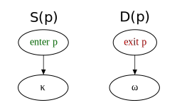
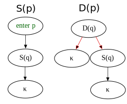

Pendulum
A reactive extension for
OCaml Web programming
Table of content
- Context : client web programming
- Pendulum : syntax and API
- Compilation
- Example : reactive video player
Easy access to content
Contents and APIs in a few lines of code
function jsonFlickrFeed(o) {
var i = 0;
while(i<10) {
document.write(
' ');
i++;
}
}
');
i++;
}
}
Easy access to code
Only one standard, Javascriptthousands of libraries
| angular-js | react | moment |
| meteor | foundation | jquery |
| ember-js | backbone | d3 |
| video.js | chart.js | redux |
| reveal.js | less.js | socket.io |
runtime model in a nutshell
An event queue sequentially processed
The DOM API
Automatic refresh of the UI
A lot of interactions
From inside and ouside

But...
There's only one way to express concurrencyThe
callback
function initElement()
{
var p = document.getElementById("foo");
p.onclick = function () {
alert("Click event detected");
};
}
Our solution: Reactive-synchronous programming
Reactive-synchronous programming
Designed to check and generate wiring design for embeded systems
The program interacts continuously with its environnement
Reactive-synchronous programming
Well-known examples: Esterel, Lustre, ReactiveML, ...
Several notions:
- Time is discret and seen as instants with a global clock
- High level concurrency (deterministic)
- Dependency between the concurrent tasks according to their instantaneous communications
Synchronous hypothesis \(\Rightarrow\) Causality analysis
Pendulum
Reactive extension for Web programming in OCamlWhy ?
- Combine causality analysis and type checking for more safety and expressivity
- Benefit of
js_of_ocaml(OCsigen) environnement
Objective: a useful language for OCaml Web programmers
ReactiveML ?
OCaml
- Fonctionnal programming language with side effects (ML family)
- Strict and static type checking with inference
- Imperative features (refs, arrays, loops)
- Rich datatype definitions and module system
- Constantly evolving: first class modules, GADTs, ...
OCaml
type tree = Leaf of int | Node of tree * tree
(* val exists_leaf : (int -> bool) -> tree -> bool *)
let rec exists_leaf p tree = match tree with
| Leaf v -> p v
| Node (left, right) ->
exists_leaf p left
|| exists_leaf p right
(* val has_even_leaf : tree -> bool *)
let has_even_leaf tree =
exists_leaf (fun n -> n mod 2 = 0) tree
Compiling to Javascript
Thanks tojs_of_ocaml, compiling from OCaml bytecode to JS
let initElement () =
let p = Dom_html.document##getElementById "foo";
p##.onclick := (fun () ->
alert("Click event detected")
);
Pendulum's language
Inspired by Esterel's statements coreMouse loc example
let update_field anchor ev =
anchor##.textContent := Js.some (Js.string
(Format.sprintf "%dx%d" (ev##.clientX) (ev##.clientY)))
let%sync mouse =
input anchor;
input window;
loop (
present window##onmousemove !(
match !!(window##onmousemove) with
| None -> ()
| Some ev -> update_field !!anchor ev
);
pause
)
Mouse loc example
val mouse :
(anchorElement t * window t) ->
(anchorElement t -> unit) * (unit -> machine_state)
open Dom_html
let _ =
window##.onload := handler (fun _ ->
let anchor = CoerceTo.a "anchor" in
let set_anchor, react = mouse (anchor, window) in
Js._false
)
Compilation
From Pendulum to GRC (GRaphCode).
- selection tree: indexed AST
- flowgraph: recursively construct two graphs for each sub-statement:
- surface (S): flowgraph of first execution
- depth (D): flowgraph of following executions
Result: the flowgraph of the instant, selection tree as environment


Video application example
Jump to the endInputs
let update_state video play_pause state = ...
let set_video_time video progress_bar = ...
let set_progress_value progress_bar video = ...
let update_anchor video anchor = ...
let%sync reactive_player =
input play_pause; (* the button *)
input progress_bar; (* the seeker element *)
input video; (* the video element *)
input time_a; (* the a elt displaying time*)
let no_update = () in
let state = Js.to_bool video##.paused in
Switch state
loop (present video##onplay !(
play_pause##.textContent := Js.some (Js.string "Pause"));
pause)
|| loop (present video##onpause !(
play_pause##.textContent := Js.some (Js.string "Play"));
pause)
|| loop (
present play_pause##onclick (emit state (not !!state));
pause)
|| loop (present state
!(update_state video play_pause !!state );
pause)
Handle progress bar
|| loop (
await progress_bar##onmousedown;
trap t' (loop(
emit no_update ();
present progress_bar##onmouseup
(!(set_video_time video progress_bar); exit t');
pause)
); pause)
|| loop (
present video##onprogress (
present no_update nothing
!(set_progress_value progress_bar video)
||
!(update_anchor video (!!time_a))
); pause)
Related works and inspiration
- ReactiveML
- Compiled with continuations with static typing
- ReactiveC model (more constrained)
- Dynamic scheduling
- Hop + HipHop(Esterel) (HipHop.js ?)
- Dynamic scheduling: interpretation and construction of the Esterel AST
- Dynamic typing
- Eliom(OCsigen) + React (OCaml)
- Functional reactive programming
- Dynamic scheduling, static typing
Conclusion
- A reactive synchronous extension of OCaml
- Static scheduling before typing part of OCaml
- Generates functions and callbacks to execute in JS with linear code size
- Easy to install in an OCaml project (thanks to PPX)
- Futur works
- Benchmarks
- Try with a bigger application
- Features (signals gathering, include it in OCsigen)
Browse code, examples and fork it on github